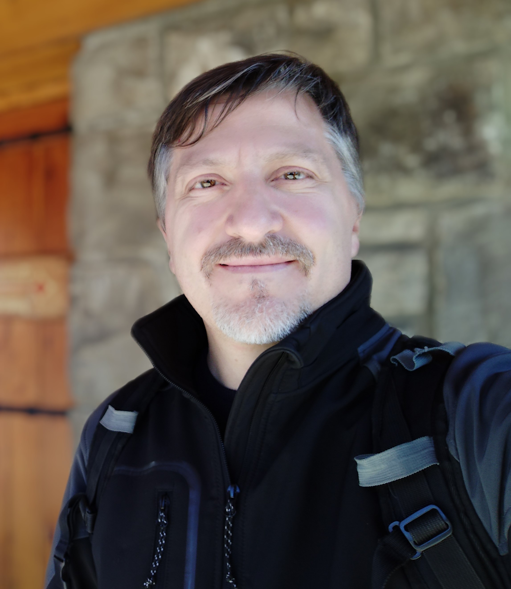

Curriculum Vitae
Danimir Lorkovic
Descripción Personal

Entusiasta de los datos, perfil analítico, me gustan las soluciones simples y potentes. Como técnico en computación y Economista fuí construyendo un perfil laboral de Consultor que ha resultado en un
analista de procesos y desarrollador de software. Con mucho trabajo entendí los pros y contras que las operaciones y personas disponen para las implementaciones de soluciones, eso nos ayudó a dar mejores resultados a los clientes.
Me gusta trabajar en equipos cordiales, que tengan foco en la satisfacción del cliente. Creo que es verdad que lograr la simplicidad en una solución es la máxima sofisticación.
Educación
- Soyhenry.com, Web full Stack Developer (En proceso de admisión)
- Universidad Austral, Diplomado en Ciencia de datos (Python)
- Bureau Veritas, Auditor Interno de Sistemas de Gestión de la Calidad ISO 9001
- Universidad tecnológica nacional,Diplomado en Gestión por procesos (Business process management)
- Universidad tecnológica nacional,Diplomado Experto Universitario Metodología Seis Sigmas
- Universidad tecnológica nacional,Diplomado en control estadístico de procesos
- Universidad de Buenos Aires, Facultad de Ciencias Económicas, Licenciado en Economía, 2000-2006
- Escuela técnica EMET N°3, Técnico en computación, 1991-1997
Experiencias Laborales
Factum Consultora srl, Socio Consultor 2014-Presente
ABS Consultoría, Consultor en gestión de procesos 2007-2014
Freelance, Administración de proyectos inmobiliarios y propiedades 2003-2008
Skills
Perfil analítico
Desarrollo, implemención y monitoreo de software en pyme y grandes empresas
Creatividad
Trabajo en equipo
Hobbies
Músico, Violinista
Running
¿Por qué estoy estudiando Web Full stack?
Con mi familia hemos entendido que es mejor dejar de viajar lejos de ellos y vi como oportunidad el orientarme casi por completo al
desarrollo de software que siempre me entusiasmó. En la consultoría he vivido el desarrollo e implementación de
soluciones y conocí el potencial de transformación que posee sobre los procesos y la gente. Me gusta ser parte de ese cambio.
¿Cuales son mis expectativas?
Respecto al curso, estandarizar mi conocimiento, adquirir buenas prácticas de programación y abrir la puerta a proyectos de negocios.